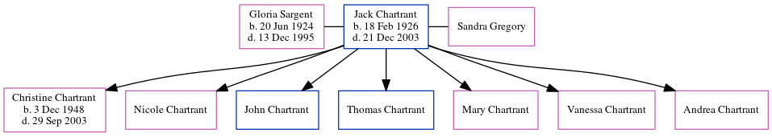

John Rouse Hammond c1853 -
[ Home ] | [ Calendar ] | [ Surnames Index ] | [ Errors ] | [ Family History ]John Hammond, the husband of Mary Ann Standing (the second cousin three-times-removed on the father's side of Nigel Horne), was born in Dover, Kent, England c. 1853 and married Mary (a lodge house keeper with whom he had 4 children: Herbert John, Jessie Elizabeth, Sidney Charles and Amelia Emily) in Elham, Kent, England around Feb 18771 (Jan/Feb/Mar).
Children
- Herbert John was born c. 1878
- Jessie Elizabeth was born on 22 Apr 1879
- Sidney Charles was born on 24 Jun 1881
- Amelia Emily was born in 1883
Citations
- England & Wales, FreeBMD Marriage Index: 1837-1915 Online publication - Provo, UT, USA: The Generations Network, Inc., 2006.Original data - General Register Office. England and Wales Civil Registration Indexes. London, England: General Register Office. © Crown copyright. Published by permission of the Cont
Family Tree
Map
Generated by ged2site. Last updated on Jul 3, 2024
Known Issues
Birth date (abt 1853) has no citations